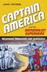
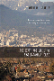
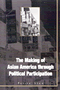
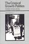

|

|
Who
Cares for the Elderly?
Public Policy and the Experiences of Adult Daughters
Abel,
Emily K.
Distinguished Contribution to Qualitative Gerontology, American
Sociological Association, 1994 |

|
Doing
Comparable Worth
Gender, Class, and Pay Equity
Acker,
Joan
Jessie Bernard Prize of the American Sociological Association
for Life Achievement, 1989
Career of Distinguished Scholarship Award, American Sociological
Association, 1993 |

|
Hegemony
The New Shape of Global Power
Agnew, John
Outstanding Academic Title, Choice, 2005 |
|
American
Federalism and Public Policy
How the System Works
Anton,
Thomas
Federalism and Intergovernmental Relations best book award
for "the best book on federalism and intergovernmental relations
published at least ten years ago that has made a lasting contribution
to the study of federalism and intergovernmental relations",
2003 |

|
Pathways
from Heroin Addiction
Recovery Without Treatment
Biernacki,
Patrick
Outstanding Scholarship Award, Society for the Study of Social
Problems, 1988
Charles Horton Cooley Award, Society for the Study of Symbolic
Interaction, 1987 |

|
Revising
State Theory
Essays in Politics and Postindustrialism
Block,
Fred
Socialist Review Book Award, Socialist Review, 1987 |

|
Politics
and the Class Divide
Working People and the Middle Class Left
Croteau,
David
Finalist for Transformational Politics Book Award, American
Political Science Association, 1996 |

|
Cultural
Politics and Social Movements
edited
by Darnovsky, Marcy, Barbara Epstein and Richard Flacks
Outstanding Academic Book, Choice, 1996 |

|
Drug Smugglers on Drug Smuggling
Lessons from the Inside
Decker, Scott H. and Margaret Townsend Chapman
Outstanding Academic Title, Choice, 2008 |
|
The
Two Faces of Political Apathy
DeLuca,
Thomas
Finalist for Transformational Politics Book Award, American
Political Science Association, 1996 |

|
Captain America and the Nationalist Superhero
Metaphors, Narratives, and Geopolitics
Dittmer, Jason Outstanding Academic Title,
Choice, 2013 |

|
The
Neoconservative Mind
Politics, Culture, and the War of Ideology
Dorrien,
Gary
Outstanding Academic Title, Choice, 1994 |

|
Nuclear
Power and Social Power
Eckstein,
Rick
Outstanding Academic Title, Choice, 1997 |

|
There Goes the 'Hood
Views of Gentrification from the Ground Up
Freeman, Lance
Winner of the Urban Affairs Association Best Book Award, 2007 |

|
Seeking
Community in a Global City
Guatemalans and Salvadorans in Los Angeles
Hamilton,
Nora and Norma Stoltz Chinchilla
Best book published in the area of Race/Ethnicity and Foreign
Policy/Globalization given by the section on Race, Ethnicity,
and Politics of the American Political Science Association
(APSA), 2002 |

|
Rude Democracy
Civility and Incivility in American Politics
Herbst, Susan
Doris Graber Award, American Political Science Association,
2013 |

|
Latinos
and the U.S. Political System
Two-Tiered Pluralism
Hero,
Rodney E.
Ralph J. Bunche Award, American Political Science Association,
1993 |

|
The
Politics of Diversity
Immigration, Resistance, and Change in Monterey Park, California
Horton,
John
Robert E. Park Award, Community and Urban Section of the
American Sociological Association, 1996 |

|
The Disenfranchisement of Ex-Felons
Hull, Elizabeth A.
Honorable Mention at the Gustavus Myers Outstanding Book Awards, 2006 |

|
The International Monetary Fund and Latin America
The Argentine Puzzle in Context
Kedar, Claudia
Honorable Mention, Luciano Tomassini Latin American International Relations Book Award Committee of the Latin American Studies Association, 2014 |

|
Movements in Times of Democratic Transition
edited by Klandermans, Bert and Cornelis van Stralen
Outstanding Academic Title, Choice, 2015 |

|
Women
of the New Right
Klatch,
Rebecca E.
Victoria Schuck Award, American Political Science Association,
1988 |

|
Making
Equity Planning Work
Leadership in the Public Sector
Krumholz,
Norman and John Forester, foreword by Alan A. Altshuler
Paul Davidoff book of the year award from the Associated
Collegiate Schools of Planning, 1990 |

|
New
Social Movements
From Ideology to Identity
edited
by Laraña, Enrique, Hank Johnston and Joseph R. Gusfield
Outstanding Academic Book, Choice, 1995 |

|
The Death and Life of the Single-Family House
Lessons from Vancouver on Building a Livable City
Lauster, Nathanael
Canadian Sociological Association's John Porter Tradition of Excellence Book Award, 2017
|

|
The
Making of Asian America through Political Participation
Lien,
Pei-te
Best Book published in the areas of Political Participation,
Voting, Elections, and Political Behavior in Racial/Ethnic
Politics by the Organized Section on Race, Ethnicity, and
Politics of the American Political Science Association (APSA).,
2002 |

|
Undocumented Fears
Immigration and the Politics of Divide and Conquer in Hazleton, Pennsylvania
Longazel, Jamie
North Central Sociological Association's scholarly achievement awards, 2017
|
|
Selma's
Peacemaker
Ralph Smeltzer and Civil Rights Mediation
Longenecker,
Steve L.
Outstanding Book Award, Gustavus Myers Center for Human Rights,
1987 |

|
Why
I Burned My Book and Other Essays on Disability
Longmore,
Paul K.
Honorable Mention in the category of Disability Rights, Gustavus
Myers Book Award, 2004
Paul Longmore was selected by the American
Association of People with Disabilities (AAPD) to receive The
Henry B. Betts Award, 2004 |
|
The City on the Hill from Below
The Crisis of Prophetic Black Politics
Marshall, Stephen H.
American Political Science Association's Foundations of Political Theory First Book Award, 2012 |

|
Race Appeal
How Candidates Invoke Race in U.S. Political Campaigns
McIlwain, Charlton D., and Stephen M. Caliendo
Ralph J. Bunche Award, American Political Science Association, 2012
Selected as "'The Best of the Best' from the University Presses" Books For Public and High School Libraries" for the ALA Annual Conference, 2012
|
|
Chilean New Song
The Political Power of Music, 1960s-1973
McSherry, J. Patrice
Cecil B. Currey Book Award, 2015
|

|
Behind the Backlash
Muslim Americans after 9/11
Peek, Lori
Midwest Sociological Society Distinguished Book Award, 2012
Best Book Award from the American Sociological Association's (ASA) section on Altruism, Morality, and Social Solidarity, 2013 |

|
Extradition,
Politics, and Human Rights
Pyle,
Christopher H.
Outstanding Academic Title, Choice, 2002 |

|
From
Identity to Politics
The Lesbian and Gay Movements in the United States
Rimmerman,
Craig A.
Finalist for the Lambda Literary Foundation's 15th Annual
Lambda Literary Award in Biography, 2003 |
|
The Ethics of Care
A Feminist Approach to Human Security
Robinson, Fiona
J. Ann Tickner Book Prize from the International Studies Association, 2014 |

|
The
Poverty of American Politics
A Theoretical Interpretation
Roelofs,
H. Mark
Harrington Award from the Caucus for a New Political Science,
1993 |

|
Terrorizing Latina/o Immigrants
Race, Gender, and Immigration Politics in the Age of Security
Sampaio, Anna
American Political Science Association's Latino Politics Best Book Prize, 2016
|
|
Language
Policy and Identity Politics in the United States
Schmidt,
Sr., Ronald
"Best Book Award" from the American Political Science Association
Section on Race, Ethnicity and Politics for the category of
"Public Policies, Legal and Social Analysis of Racial and
Ethnic Politics", 2001 |

|
The
Crisis of Growth Politics
Cleveland, Kucinich, and the Challenge of Urban Populism
Swanstrom,
Todd
Best Book in Urban Politics Award, American Political Science
Association, 1988 |

|
El
Salvador in the Eighties
Counterinsurgency and Revolution
Uclés,
Mario Lungo, introduction by Arthur Schmidt, translated by Amelia
F. Shogan
Casa de las Amèricas Prize for the Spanish Edition, 1990 |
|